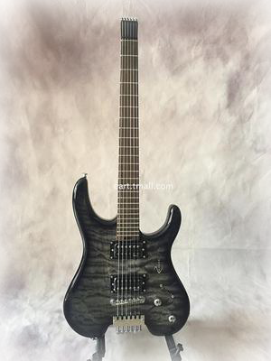
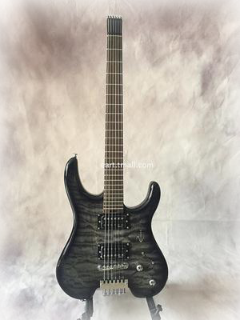

因为没有琴头被广大音乐爱好者称为无头吉他，在91年的Beyond演唱会上黄贯中弹奏《郫面派对》让音乐爱好者熟知。
无头电吉他顾名思义就是去掉了电吉他琴头部分的吉他，它的装弦方式会不同于传统的电吉他，在音色表现上没有太多的变化，在某些特殊的音域音质会略差于传统琴，毕竟琴头部分对于吉他本身的声学特性是有一定影响的。在价格上，和传统电吉他并没有太多的差异，主要还是依据品牌和品相质地定价。当然，无头吉他确实好看，至少弹奏时的状态飘逸无比，大部分吉他爱好者看过之后，总会被它独树一帜的造型所吸引。

|
|
|||||||
因为没有琴头被广大音乐爱好者称为无头吉他，在91年的Beyond演唱会上黄贯中弹奏《郫面派对》让音乐爱好者熟知。 无头电吉他顾名思义就是去掉了电吉他琴头部分的吉他，它的装弦方式会不同于传统的电吉他，在音色表现上没有太多的变化，在某些特殊的音域音质会略差于传统琴，毕竟琴头部分对于吉他本身的声学特性是有一定影响的。在价格上，和传统电吉他并没有太多的差异，主要还是依据品牌和品相质地定价。当然，无头吉他确实好看，至少弹奏时的状态飘逸无比，大部分吉他爱好者看过之后，总会被它独树一帜的造型所吸引。 |
 |
||||||